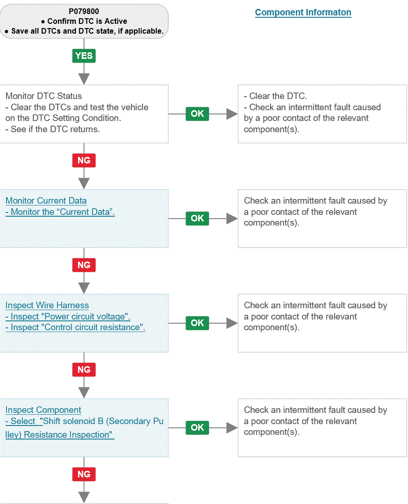
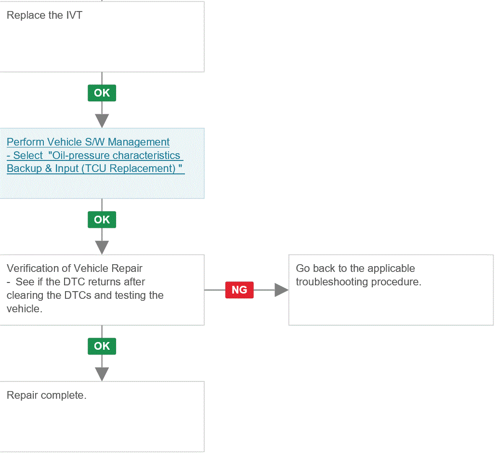

LEMON Manuals
: Even more car manuals for everyone: 1960-2025
Home
>>
Hyundai
>>
2022
>>
Elantra N Line, Standard Trans
>>
Repair and Diagnosis
>>
External Pages
>>
Different variant/trim
>>
Section 16 (Automatic Transaxle System Diagnosis - 2.0L (Except HEV))
>>
DTC P0798-00: Pressure Control Solenoid 'C' Electrical (Secondary Pulley)
>>
Troubleshooting
>>
Diagnostic Flowchart
Diagnostic Flowchart
WARNING:
This page is about a different variant/trim than selected.
Fig 1: 1 Of 2

Courtesy of HYUNDAI MOTOR AMERICA
Fig 2: 2 Of 2

Courtesy of HYUNDAI MOTOR AMERICA